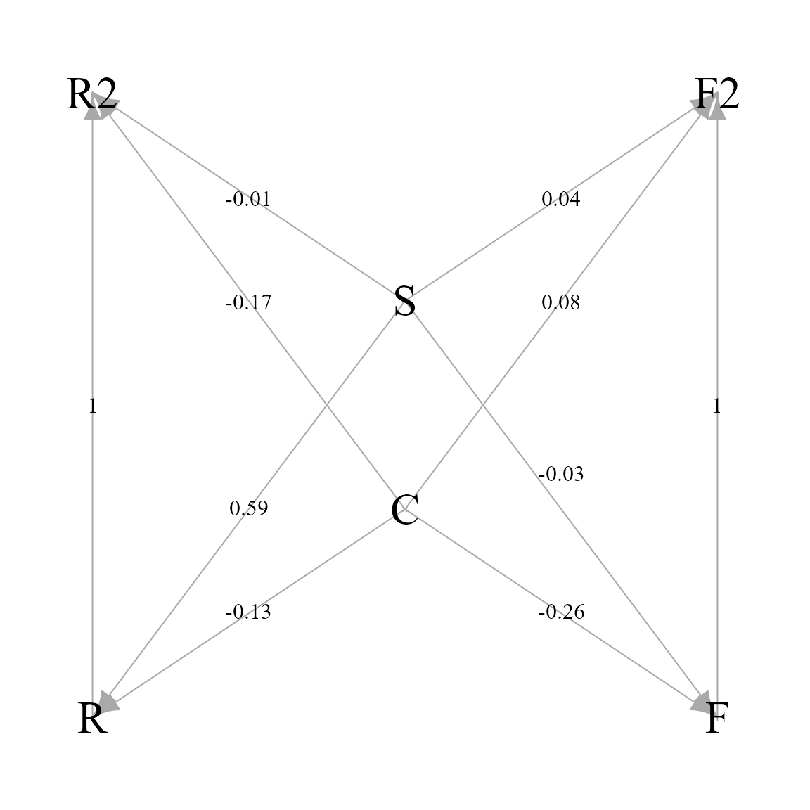

Spatial structural models
James T. Thorson
Source:vignettes/web_only/spatial_structural_model.Rmd
spatial_structural_model.RmdtinyVAST provides an expressive interface to specify
structural interactions among variables using arrow or arrow-and-lag
notation from structural equation models and dynamic structural equation
models, respectively. Here, we replicate the original analysis from
(Thorson et al. 2025)
Load data
# Load data
data(alaska_sponge_coral_fish)
combined_samples = alaska_sponge_coral_fish$combined_samples
# Define the spatial mesh
mesh = fm_mesh_2d(
loc = combined_samples[,c('X','Y')],
cutoff = 10 # Value from original paper
#cutoff = 25 # Lower resolution to speed up vignette
)Fit model
We then define a separate intercept for each group and year, and a log-area offset
# Define formula
Formula = Count ~ 0 + interaction(Group4,Year) + offset(log(AreaSwept))We also specify the AIC-selected structural model from the original paper, which includes habitat-effects for camera-measured coral and sponge densities on camera-measured fish densities, separate habitat-effects for coral/sponge on trawl-measured fish densities, and proportional variation in fish density between camera and trawl measurements.
# Define arrow-and-lag notation
space_term = "
# Habitat effects on drop-camera measurements
Coral -> Flat, b1
Sponge -> Flat, b2
Coral -> Rock, b3
Sponge -> Rock, b4
# Habitat effects on trawl measurements
Coral -> Flat_trawl, d1
Sponge -> Flat_trawl, d2
Coral -> Rock_trawl, d3
Sponge -> Rock_trawl, d4
# Fix these at 1
# (Proportional change in density between gears)
Flat -> Flat_trawl, NA, 1
Rock -> Rock_trawl, NA, 1
"We also estimate separate measurement-error parameters for each of six variables
# Specify distribution for each variable
Family = list(
Coral = tweedie(),
Sponge = tweedie(),
Rock = tweedie(),
Flat = tweedie(),
Rock_trawl = tweedie(),
Flat_trawl = tweedie()
)We then run the model without standard errors to speed up the vignette:
# Specify estimation settings
control = tinyVASTcontrol(
profile = c("alpha_j"),
getsd = FALSE # To speed up vignette
)
# Fit model
myfit = tinyVAST(
data = combined_samples,
formula = Formula,
space_term = space_term,
family = Family,
space_columns = c("X", "Y"),
variable_column = "Group4",
variables = c("Coral", "Sponge", "Rock", "Flat", "Rock_trawl", "Flat_trawl"),
distribution_column = "Group4",
spatial_domain = mesh,
control = control
)Visualize structural linkages
Finally, we use igraph to allow detailed control when
plotting the estimated structural linkages among variables:
# Function to relabel variables
Switch = function(x){
switch( x, "Coral"="C", "Sponge"="S", "Rock"="R",
"Flat"="F", "Rock_trawl"="R2", "Flat_trawl"="F2" )
}
# Extract objects
out = summary( myfit )
variables = as.character(myfit$internal$variables)
var_labels = sapply( variables, FUN=Switch )
label = round(out$Estimate,2)
# Define location for plotting variables
layout = cbind(
x=c(2,2,1,3,1,3),
y=c(2,3,1,1,4,4)
)
rownames(layout) = c( "Coral", "Sponge", "Rock",
"Flat", "Rock_trawl", "Flat_trawl" )
# Define locations for plotting arrows
df <- data.frame(
from = sapply(out$from,FUN=Switch),
to = sapply(out$to,FUN=Switch),
label = label,
x = NA,
y = NA
)
# Only show one-headed arrows
df = subset( df, from!=to )
# Define location for labels of one-headed arrows
df$x = c( 0.5, 0.5, -0.5, -0.5, 0.5, 0.5, -0.5, -0.5, 1, -1 )
df$y = c( -0.66, -0.22, -0.66, -0.33, 0.33, 0.66, 0.33, 0.66, 0, 0 )
# Make graph
pg = graph_from_data_frame(
d = df[,1:3],
directed=TRUE,
vertices=data.frame(var_labels)
)
# Make plot
par( mar=c(0,0,0,0) )
plot.igraph(
pg,
vertex.shape="rectangle",
vertex.size=0,
vertex.size2=0,
vertex.label.cex=2,
vertex.color="grey",
vertex.label.color="black",
edge.label.color="black",
edge.label.cex=1,
layout=layout[as.character(variables),],
xlim=1.2*c(-1,1),
ylim=1.2*c(-1,1),
edge.label.dist=0.8,
edge.label.x=df$x,
edge.label.y=df$y
)
Runtime for this vignette: 7.16 mins